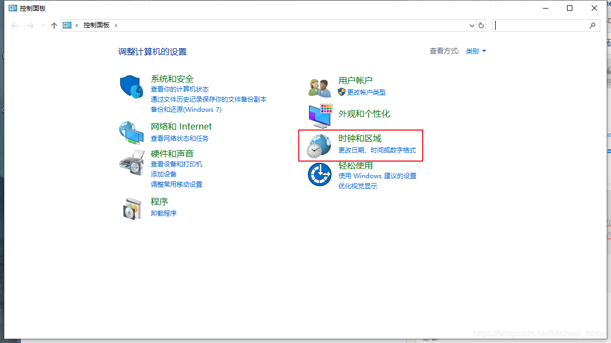
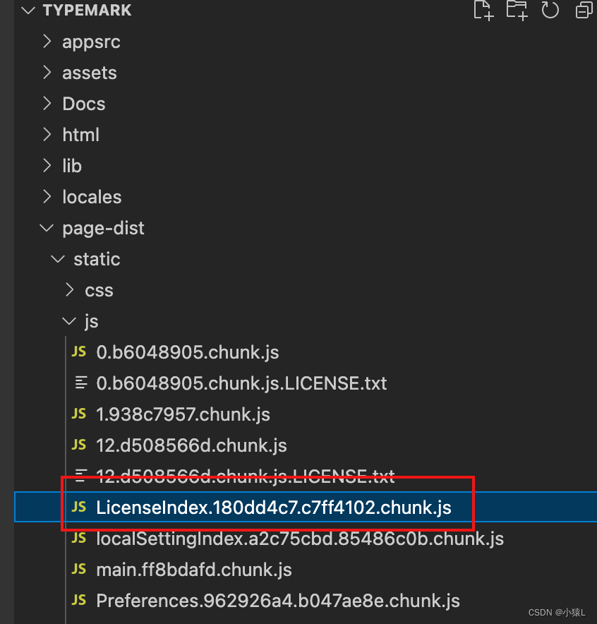
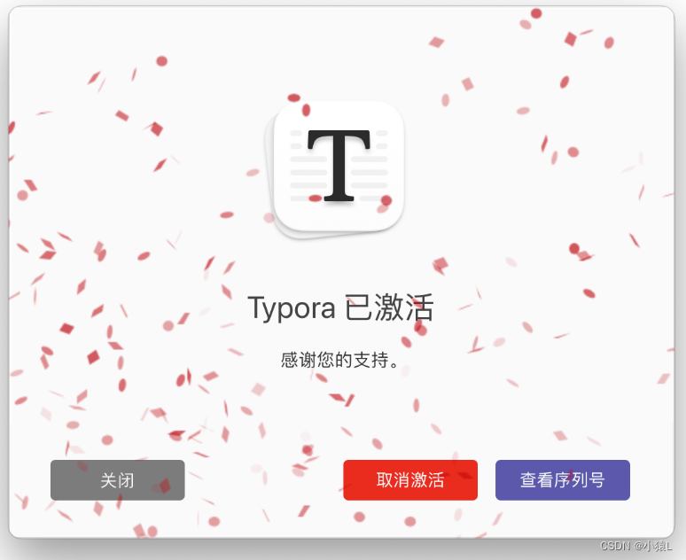
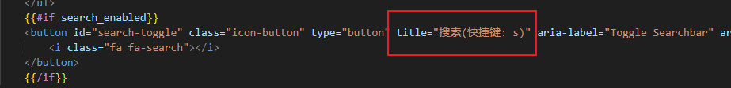
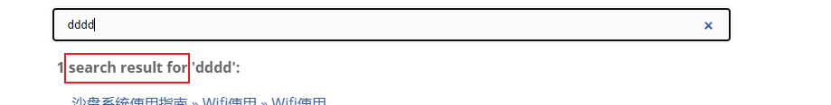

CSharp
WPF
ListBox
常用于导航
自定义ItemContainerStyle
在使用ListBox的时候，发现鼠标移入到item上，会有一个很宽的背景，想把它去除，我们自己定义鼠标移入的状态，可以通过 ItemContainerStyle 来定义模板，以下实现一个理论考试的题目选择样式，有如下需求
- 题目有 未做、已做、正确、错误，四种状态，不同的状态显示不同的背景
- 鼠标移入有状态变化（因为这里有四种状态，采用鼠标移入的时候，先死一个透明度40的遮罩，或者显示一个边框，否则要基于4种颜色来设计4种不同的over 色）
- 注意：不能将
ItemContainerStyle样式设定为：ItemContainerStyle="{x:Null}"，会引起其他异常。
<ListBox.ItemContainerStyle>
<Style TargetType="ListBoxItem">
<Setter Property="Padding" Value="0"/>
<Setter Property="BorderThickness" Value="0"/>
<Setter Property="BorderThickness" Value="0"/>
<Setter Property="Template" >
<Setter.Value>
<ControlTemplate >
<Border x:Name="_border" Style="{StaticResource subnum_border}">
<Grid>
<TextBlock Text="{Binding SubNum}" Style="{StaticResource subnum_text}"/>
<Border x:Name="_mask" VerticalAlignment="Stretch" HorizontalAlignment="Stretch" Visibility="Collapsed"
Opacity="0.4" Background="#FFF7E9C2"/>
</Grid>
</Border>
<ControlTemplate.Triggers>
<!--未做-->
<DataTrigger Binding="{Binding OperateState}" Value="0">
<Setter TargetName="_border" Property="Background" Value="#FFB9B9B9"/>
</DataTrigger>
<!--已做-->
<DataTrigger Binding="{Binding OperateState}" Value="1">
<Setter TargetName="_border" Property="Background" Value="#FF428DD2"/>
</DataTrigger>
<!--正确-->
<DataTrigger Binding="{Binding OperateState}" Value="2">
<Setter TargetName="_border" Property="Background" Value="Green"/>
</DataTrigger>
<!--错误-->
<DataTrigger Binding="{Binding OperateState}" Value="3">
<Setter TargetName="_border" Property="Background" Value="#FFAD1E1E"/>
</DataTrigger>
<!-- 鼠标悬停时，改变背景色 -->
<Trigger Property="IsMouseOver" Value="True">
<Setter TargetName="_mask" Property="Visibility" Value="Visible" />
</Trigger>
</ControlTemplate.Triggers>
</ControlTemplate>
</Setter.Value>
</Setter>
<Style.Triggers>
<Trigger Property="IsMouseOver" Value="True">
<!-- 当鼠标移入时重置背景色为透明 -->
<Setter Property="Background" Value="Transparent"/>
<!-- 其他的属性重置 -->
</Trigger>
</Style.Triggers>
</Style>
</ListBox.ItemContainerStyle>
设置ItemContainerStyle 为null(出现问题)
这种方式，我们可以单独定义我们的item 模板，如果不自定义模板，还需要，重置 ListItem的风格
<!-- 自定义 ListBoxItem 的控件模板 去除自带的模板样式-->
<Style TargetType="ListBoxItem">
<Setter Property="Template">
<Setter.Value>
<ControlTemplate TargetType="ListBoxItem">
<ContentPresenter />
</ControlTemplate>
</Setter.Value>
</Setter>
</Style>
<ListBox ItemsSource="{Binding YourItems}"
ItemTemplateSelector="{StaticResource MyTemplateSelector}"
ItemContainerStyle="{x:Null}" />
ListView
表头动态显示和隐藏
在WPF中，表头不在VisualTree里面，无法通过绑定属性值动态控制列的显示隐藏，此示例通过附件属性实现该功能， 以 ListView为例，其他具有表头的组件
如DataGrid应类似处理。
- 添加附加属性
public class GridViewColumnVisibilityManager
{
static void UpdateListView(ListView lv)
{
GridView gridview = lv.View as GridView;
if (gridview == null || gridview.Columns == null) return;
List<GridViewColumn> toRemove = new List<GridViewColumn>();
foreach (GridViewColumn gc in gridview.Columns)
{
if (GetIsVisible(gc) == false)
{
toRemove.Add(gc);
}
}
foreach (GridViewColumn gc in toRemove)
{
gridview.Columns.Remove(gc);
}
}
public static bool GetIsVisible(DependencyObject obj)
{
return (bool)obj.GetValue(IsVisibleProperty);
}
public static void SetIsVisible(DependencyObject obj, bool value)
{
obj.SetValue(IsVisibleProperty, value);
}
public static readonly DependencyProperty IsVisibleProperty =
DependencyProperty.RegisterAttached("IsVisible", typeof(bool), typeof(GridViewColumnVisibilityManager), new UIPropertyMetadata(true));
public static bool GetEnabled(DependencyObject obj)
{
return (bool)obj.GetValue(EnabledProperty);
}
public static void SetEnabled(DependencyObject obj, bool value)
{
obj.SetValue(EnabledProperty, value);
}
public static readonly DependencyProperty EnabledProperty =
DependencyProperty.RegisterAttached("Enabled", typeof(bool), typeof(GridViewColumnVisibilityManager), new UIPropertyMetadata(false,
new PropertyChangedCallback(OnEnabledChanged)));
private static void OnEnabledChanged(DependencyObject obj, DependencyPropertyChangedEventArgs e)
{
ListView view = obj as ListView;
if (view != null)
{
bool enabled = (bool)e.NewValue;
if (enabled)
{
view.Loaded += (sender, e2) =>
{
UpdateListView((ListView)sender);
};
view.TargetUpdated += (sender, e2) =>
{
UpdateListView((ListView)sender);
};
view.DataContextChanged += (sender, e2) =>
{
UpdateListView((ListView)sender);
};
}
}
}
}
- 前端使用
- 引入附加属性脚本的命名空间
xmlns:foo="clr-namespace:LotteryPredict.Control" - 在ListView里面使用附件属性 用
foo:GridViewColumnVisibilityManager.Enabled="true",启用附件属性的功能 - GridViewColumn 中使用
foo:GridViewColumnVisibilityManager.IsVisible="{Bindg IsFullAuth}"控制该列
...
xmlns:foo="clr-namespace:LotteryPredict.Control"
...
<ListView Grid.Row="1" ItemContainerStyle="{StaticResource CenterLVItemStyle}" ItemsSource="{Binding CurVersionCatalogs}"
foo:GridViewColumnVisibilityManager.Enabled="True">
...
<GridViewColumn Header="目录名称" DisplayMemberBinding="{Binding Name}" Width="110"
foo:GridViewColumnVisibilityManager.IsVisible="{Binding IsFullAuth}"
></GridViewColumn>
...
元素焦点
项目案例
Focus() 函数常常设置失败
通过以下方式可设置成功 pwdBoxPWD 需要设置的UI元素
Dispatcher.BeginInvoke(System.Windows.Threading.DispatcherPriority.Render,
new Action(() => pwdBoxPWD.Focus()));
项目案例
在某项目中，有一组菜单按钮，一个菜单对应一个页面，假设A按钮对应A页面，B按钮对应B页面，同时有个需求，在A页面，按下空格键后代码控制跳转到B页面。
出现问题：当点击A按钮后，然后按下空格键，不会跳到B页面。
调试结果：按下空格键后执行代码跳转到B页面后，会再次跳转到A页面。
分析原因：
- 点击A按钮，此时A按钮获得键盘焦点。
- 按下空格键，执行跳转到B的代码逻辑，跳转到B页面。
- 执行完成后，由于A按钮具有焦点会响应键盘，所以会执行A按钮的点击事件，既点击了A按钮，跳转到A页面。
WPF 剪切板
使用说明
在开发中，经常使用剪切板实现复制功能，但是当剪切板被其他程序占用的时候，WPF程序会报错，总结以下解决方案：

参考
设置项目版本号
- 可以在项目属性面板上设置（一般在包选项卡下），这种方式没找到产品版本号的设置
- 可直接编辑项目文件，以下为编辑项目文件案例，这种方式可直接设置各种版本号
框架：. net 6.0
添加版本号，可以在测试的时候确定当前版本
- 可以在属性面板中设置(只看到了文件版本和程序集版本号的设置)
- 也可以直接在文件中编辑
<PropertyGroup>
<OutputType>WinExe</OutputType>
<TargetFramework>net6.0-windows</TargetFramework>
<UseWPF>true</UseWPF>
<ApplicationIcon>sc.ico</ApplicationIcon>
<NeutralLanguage>zh-CN</NeutralLanguage>
<Version>2.0.0</Version>
<AssemblyVersion>2.0.0.0</AssemblyVersion>
<FileVersion>2.0.0.0</FileVersion>
</PropertyGroup>

资源引用
WPF中的资源包含很多，如图片、字体、声音，以及样式、模板等很多，在使用的时候常常出现很多问题。
资源路径
在WPF开发中，对资源的管理非常重要，当我们存在多个项目时，最好是把所有的资源都放在一个基础项目中进行管理，方便维护。
正确的做法使用
pack://application:,,,/程序集名称;component/资源路径名
图片资源路径
存在两个项目
- 基础项目名称：Demo.Infrastructure
- 主项目 Demo
所有的资源在 Demo.Infrastructure 中定义
- 正确的使用
<UserControl.Background>
<!---->
<ImageBrush ImageSource="pack://application:,,,/
Demo.Infrastructure;component/images/login_bg.png"/>
</UserControl.Background>
- 错误的使用（不加 pack://application:,,,）此时为相对路径，在编辑模式下可以看到图片，但是运行后不显示
<UserControl.Background>
<!---->
<ImageBrush ImageSource="/
Demo.Infrastructure;component/images/login_bg.png"/>
</UserControl.Background>
- 错误的使用（不加 pack://application:,,, 和命名空间）
<UserControl.Background>
<!---->
<ImageBrush ImageSource="images/login_bg.png"/>
</UserControl.Background>
字体资源路径
可以下载阿里巴巴的字体文件，下载后将ttf文件拷贝到项目中
<TextBlock Text="" FontFamily="{StaticResource iconfont}" FontSize="14" Foreground="Red" VerticalAlignment="Center" />
<TextBlock Text="" FontFamily="/OESTS.Modules.Login;component/fonts/#iconfont" FontSize="14" Foreground="Red" VerticalAlignment="Center" />
<TextBlock Text="" FontFamily="/fonts/#iconfont" FontSize="14" Foreground="Red" VerticalAlignment="Center"/>
LoadComponent使用的路径
加载组件函数，可以加载一个xaml文件，这里页存在一个资源路径的问题，此方法仅能使用相对路径，不能使用觉得路径
案例：需求加载一个流文档控件的文件资源，
文件名为flowdoc.xaml，如下
<FlowDocument xmlns="http://schemas.microsoft.com/winfx/2006/xaml/presentation"
xmlns:x="http://schemas.microsoft.com/winfx/2006/xaml"
xmlns:sys="clr-namespace:System;assembly=mscorlib"
TextOptions.TextFormattingMode="Display" >
<Paragraph>
<Run Text="加载测试" ></Run>
</Paragraph>
</FlowDocument>
- 当只有一个项目时，若文件存在项目的resources文件中，加载方式如下
FlowDocument doc = (FlowDocument)Application.LoadComponent(new Uri("/resources/flowdoc.xaml", UriKind.Relative));
- 当存在多个项目，如使用了Prism框架，在一个模块项目中加载时（模块项目的程序集为：DemoModule）
//正确的做法
FlowDocument doc = (FlowDocument)Application.LoadComponent(
new Uri("/DemoModule;component/resources/flowdoc.xaml",
UriKind.Relative));
//错误的做法，不能加pack://application:,,,，加了后为绝对路径
FlowDocument doc = (FlowDocument)Application.LoadComponent(
new Uri("pack://application:,,,DemoModule;component/resources/flowdoc.xaml",
UriKind.Relative));
资源的引用方式
- 本地添加模板目录：分别创建模板对象。
- App.xaml中添加模板目录，创建全局模板对象，导致大家的数据相同。
- 对于样式、转换器、模板选择器等，在App.xaml添加目录比较合适。
- 对于模板的使用，在本地添加模板目录不会出现问题。
- 如果两者都添加，本地添加的起作用。
场景描述： 当前有两个页面（AView,BView）的布局相同，数据不同，定义了一个通用模板为 ContentTemplate， 定义了通用模板，key 为 contentView
<ResourceDictionary xmlns="http://schemas.microsoft.com/winfx/2006/xaml/presentation"
xmlns:x="http://schemas.microsoft.com/winfx/2006/xaml" xmlns:local="clr-namespace:ScreenControlE" >
<Grid x:Key="contentView">
<TextBlock Text="{Binding Path=Content}" FontSize="14" Foreground="Red" VerticalAlignment="Center" />
</Grid>
</ResourceDictionary>
A、B页面在本地添加模板目录
- A、B页面的前端（这里使用了Prsim框架），在本地添加了资源目录，并引用
contentView，此时两个页面显示正常，分别显示自己的内容
<UserControl x:Class=" ScreenControlE.Views.NCCView"
xmlns="http://schemas.microsoft.com/winfx/2006/xaml/presentation"
xmlns:x="http://schemas.microsoft.com/winfx/2006/xaml"
xmlns:prism="http://prismlibrary.com/"
prism:ViewModelLocator.AutoWireViewModel="True">
<UserControl.Resources>
<ResourceDictionary Source="/Themes/ContentTemplate.xaml"/>
</UserControl.Resources>
<Grid>
<ContentControl x:Name="ncc_contentCrl" Content="{StaticResource contentView }"/>
</Grid>
</UserControl>
在App.xaml中添加模板的目录
- App.xaml
<prism:PrismApplication x:Class="ScreenControlE.App"
xmlns="http://schemas.microsoft.com/winfx/2006/xaml/presentation"
xmlns:x="http://schemas.microsoft.com/winfx/2006/xaml"
xmlns:local="clr-namespace:ScreenControlE"
xmlns:prism="http://prismlibrary.com/" >
<Application.Resources>
<ResourceDictionary Source="/Themes/ContentTemplate.xaml"/>
</Application.Resources>
</prism:PrismApplication>
- A、B页面的前端（这里使用了Prsim框架），直接引用
contentView
<UserControl x:Class=" ScreenControlE.Views.NCCView"
xmlns="http://schemas.microsoft.com/winfx/2006/xaml/presentation"
xmlns:x="http://schemas.microsoft.com/winfx/2006/xaml"
xmlns:prism="http://prismlibrary.com/"
prism:ViewModelLocator.AutoWireViewModel="True">
<Grid>
<ContentControl x:Name="ncc_contentCrl" Content="{StaticResource contentView }"/>
</Grid>
</UserControl>
-
两个页面显示了相同的内容，在App.xaml中添加的相当于创建了一个全局变量的对象
-
ViewModel（A为例）
public class AViewModel : ViewModelBase
{
public string Content { get; set; } = "A模板"
}
常用包
排序作为推荐优先级
序列化
网络通信
数据库
Excel操作
Pdf操作
Messagepack
速度超快的序列化工具。
Union 使用
- 当存在多层多态时，在最基类上标注所有的子类
- 中间层为抽象层也需要使用Union
/*Union应用所有的实现类*/
[MessagePack.Union(0, typeof(Foo1))]
[MessagePack.Union(1, typeof(Foo2))]
[MessagePack.Union(2, typeof(Bar1))]
public interface Root { }
[MessagePackObject]
[MessagePack.Union(0, typeof(Foo1))] //中间层使用Union,否则报错
[MessagePack.Union(1, typeof(Foo2))] //中间层使用Union,否则报错
public abstract class FooRoot : Root
{
[Key(0)] public string F1 { get; set; }
}
[MessagePackObject]
[MessagePack.Union(0, typeof(Bar1))] //中间层使用Union,否则报错
public abstract class BarRoot : Root { }
[MessagePackObject]
public class Foo1 : FooRoot { [Key(1)] public string Name { get; set; } }
[MessagePackObject]
public class Foo2 : FooRoot { [Key(1)] public string Name { get; set; } }
[MessagePackObject]
public class Bar1 : BarRoot { [Key(0)] public string Name { get; set; } }
public class Test
{
public static void TestMessagepack()
{
List<Root> arr = new List<Root>();
arr.Add(new Foo1() { F1 = "f" , Name = " nam"});
arr.Add(new Bar1() { Name = "b"});
var bin = MessagePackSerializer.Serialize(arr);
var list = MessagePackSerializer.Deserialize<List<Root>>(bin);
foreach (var item in list)
{
Console.WriteLine("00");
}
}
}
Mpc
进行AOT编译时，请仔细检查输出信息，是否有错误，这一步导致的错误，在后面无法跟踪查找
服务端收到的消息滞后一条
第一条消息服务端没收到，客户端发送第二条时，服务端收到上一条的消息？
原因：
使用了SSL，加密后出现上述问题，不使用就正常，未测试具体原因。
Excel插件-EPPlus
-
使用前需要设置证书声明
-
一个文件中的sheet,索引是从0开始的
-
表里面的内容，行和列的索引都是从1开始的
-
当new ExcelPackage 时，若没有文件会直接创建
-
在 wpf 和 unity 端都比较好用， unity 端可以用这个来读取配置的excel文件，转换为Unity 多序列化文件，或者 json ，注意exce只是用来配置文件，真正使用的还是json等通用的文件格式，因为excel 在有些平台不支持，或者说使用的插件不支持，且excel文件比较大，冗余数据多
代码：
public static List<string[]> ReadAllInfo(int hostId)
{
ExcelPackage.LicenseContext = LicenseContext.NonCommercial;//声明非商业证书
FileInfo fileInfo = new FileInfo(excelPath);
if(File.Exists(fileInfo.FullName) == false)
{
return null;
}
using (ExcelPackage ep = new ExcelPackage(fileInfo))
{
List<string[]> listArr = new List<string[]>();
ExcelWorksheet ipSheet = ep.Workbook.Worksheets[hostId];
if (ipSheet.Cells[2, 1].Value == null) return null;
int workStaCount = int.Parse(ipSheet.Cells[2, 3].Value.ToString());
int count = 3 + workStaCount;
int row = 1;
while (true)
{
if (ipSheet.Cells[row, 1].Value != null)
{
string[] rowData = new string[count];
for (int i = 0; i < count; i++)//遍历列
{
if (ipSheet.Cells[row, i + 1].Value != null)
rowData[i] = ipSheet.Cells[row, i + 1].Value.ToString();
}
listArr.Add(rowData);
row++;
}
else
{
break;
}
}
return listArr;
}
}
技能树
CSharp 上一些通用的技能
CSharp-格式化参数
DateTime 格式化
dateTime.ToString("yyyy-MM-DD hh:mm:ss");
TimeSpan 格式化
常用：timeSpan.ToString(@"dd\.hh\:mm\:ss"); 或则 timeSpan.ToString("dd\\.hh\\:mm\\:ss");区别是否使用转义符号。
using System;
public class Example
{
public static void Main()
{
TimeSpan duration = new TimeSpan(1, 12, 23, 62);
string output = null;
output = "Time of Travel: " + duration.ToString("%d") + " days";
Console.WriteLine(output);
output = "Time of Travel: " + duration.ToString(@"dd\.hh\:mm\:ss");
Console.WriteLine(output);
Console.WriteLine("Time of Travel: {0:%d} day(s)", duration);
Console.WriteLine("Time of Travel: {0:dd\\.hh\\:mm\\:ss} days", duration);
}
}
// The example displays the following output:
// Time of Travel: 1 days
// Time of Travel: 01.12:24:02
// Time of Travel: 1 day(s)
// Time of Travel: 01.12:24:02 days
Linq
多个属性具有相同处理逻辑
使用 Expression 来实现
Expression：将强类型lambda表达式表示为表达式树形式的数据结构。该类不能被继承，当一个对象存在多个相同类型的属性，且这些属性控制的功能相同时,可以使用 Expression 来实现
- 有一组 Person, 需要遍历每个person，根据属性 A 或者 B，判断是说
Hello还是Bye - Person
public class Person
{
public string Name { get; set; }
public bool pA { get; set; }
public bool pB { get; set; }
}
- 创建 Person List
class ExpressionTest
{
List<Person> persons = new List<Person>();
public ExpressionTest()
{
persons.Add(new Person { Name = "Jerry", pA = true, pB = false });
persons.Add(new Person { Name = "Shin", pA = true, pB = false });
}
...
}
常规解法
- 分别写两个方法，根据属性A 或者 属性B 来判断
internal class ExpressionTest
{
List<Person> persons = new List<Person>();
public ExpressionTest()
{
persons.Add(new Person { Name = "Jerry", pA = true, pB = false });
persons.Add(new Person { Name = "Shin", pA = true, pB = false });
}
/* 需求： 遍历 persons， 根据 pA 或者 pB 的值，判断每个人是说 hello 还是 bye
* 常规写法： 分别些两个方法遍历判断
* Expression: 通过表达式实现通用写法
*
*/
#region 常规写法
private void SayHelloByA()
{
foreach (var p in persons)
{
if (p.pA)
Console.WriteLine($"[{p.Name}]\tSay Hello！");
else
Console.WriteLine($"[{p.Name}]\tSay Bye！");
}
}
private void SayHelloByB()
{
foreach (var p in persons)
{
if (p.pB)
Console.WriteLine($"[{p.Name}]\tSay Hello！");
else
Console.WriteLine($"[{p.Name}]\tSay Bye！");
}
}
#endregion
// 测试
public void Test()
{
SayHelloByA();// 输出: Say Hello!
SayHelloByB();// 输出: Say Bye!
}
}
- 存在的问题 ： 如果我们有多个属性 C D E F，那么我们就需要写多少方法，但是发现这些方法的逻辑都是一样的。总感觉很别扭，此时就要用到 Expression
Expression 写法
internal class ExpressionTest
{
List<Person> persons = new List<Person>();
public ExpressionTest()
{
persons.Add(new Person { Name = "Jerry", pA = true, pB = false });
persons.Add(new Person { Name = "Shin", pA = true, pB = false });
}
#region Expression
public void SayHello(Expression<Func<Person, bool>> expr)
{
var valProp = (PropertyInfo)(((MemberExpression)expr.Body).Member);
foreach (var p in persons)
{
bool isShow = (bool)valProp.GetValue(p, null);
if (isShow)
Console.WriteLine($"[{p.Name}]\tSay Hello！");
else
Console.WriteLine($"[{p.Name}]\tSay Bye！");
}
}
#endregion
// 测试
public void Test()
{
SayHello(x => x.pA);// 输出: Say Hello!
SayHello(x => x.pB);// 输出: Say Bye!
}
}
- 通过表达式，让调用者来确定条件的值。
批处理文件
创建批处理文件
在Windows中，批处理文件以.bat为扩展名。
创建一个名为hello.bat的文件，并输入以下内容：
echo Hello, World!
pause
保存文件后，双击该文件即可运行。
执行批处理文件
双击hello.bat文件后，会弹出一个命令行窗口，显示Hello, World!，然后等待用户按下任意键后关闭窗口。
批处理文件语法
批处理文件使用DOS命令和Windows命令，以及一些自定义的命令。
注释
批处理文件中的注释以rem开头，直到行尾结束。
rem 这是一个注释
变量
批处理文件中的变量以set命令开头，后面跟变量名和变量值。
set name=John
set age=25
条件语句
批处理文件中的条件语句使用if命令和else命令。
if %var%==1 echo 变量等于1
if %var%==2 echo 变量等于2
if %var%==3 echo 变量等于3
if %var%!=1 echo 变量不等于1
if %var%!=2 echo 变量不等于2
if %var%!=3 echo 变量不等于3
循环语句
批处理文件中的循环语句使用for命令和do命令。
for /L %%i in (1,1,10) do echo %%i
调用其他批处理文件
批处理文件可以使用call命令调用其他批处理文件。
call other.bat
调用外部程序
批处理文件可以使用start命令调用外部程序。
start notepad.exe
调用其他语言程序
批处理文件可以使用call命令调用其他语言程序，如C语言程序。
call myprogram.exe
调用其他操作系统程序
批处理文件可以使用start命令调用其他操作系统程序，如Linux程序。
start /D C:\Program Files\Git\bin\bash.exe
中文编码
在文件中加入
chcp 65001 > nul
分区MBR格式转GPT格式
本教程将指导您将MBR转换为GPT分区表。
步骤
- 打开DiskGenius，选择要转换的磁盘。
- 在左侧导航栏中，选择"分区管理"。
- 在右侧的"分区列表"中，右键单击要转换的分区，选择"转换为GPT"。
- 输入新分区的名称和大小，然后点击"确定"按钮。
- 等待转换完成。
- 重启计算机以使更改生效。
常见问题
-
在分区的前后没有足够的空闲空间？
- 使用分区调整工具，前部分分区默认不变
- 后部分分区设置 8MB，使用键盘上方的数字键输入，小键盘可能无法使用。
-
调整分区出现未使用簇的问题？
- 首先，在开始菜单的运行中输入cmd，打开命令提示符。
- 在命令行中输入“chkdsk /f /x c:”，其中“c:”应替换为实际提示有问题的盘符（有时候显示的是F盘）。这个命令会检查并修复磁盘上的文件系统错误。
- 回车执行命令，然后根据提示进行操作。如果控制台提示在下次开机时处理，请重启电脑，并等待磁盘检查完成。
- 完成磁盘检查后，通常就可以正常地在DiskGenius等工具中进行无损调整分区操作了，此时不会再出现“$Bitmap中有标记已使用的未用簇”的提示。
- 请注意，执行这些操作前，请确保已备份重要数据，以防数据丢失。检查分区表是否已成功转换为GPT。
- 检查分区是否已成功创建。
- 尝试重新启动计算机并再次尝试使用分区。
-
将硬盘从MBR转GPT后无法进入系统？
- 在CMD中执行命令：
bcdboot F:\Windows /s F: /f uefi。 - 注意
F是盘符号。
- 在CMD中执行命令：
-
回到系统还是不能更新系统，出现错误
软件
-
开发IDE
-
文本编辑
包管理器控制台
Entity Framework
安装
在VS包控制台执行 dotnet ef错误
dotnet : 无法执行，因为找不到指定的命令或文件。
所在位置 行:1 字符: 1
+ dotnet ef dbcontext scaffold "server=192.168.1.236;database=JzErp;uid ...
+ ~~~~~~~~~~~~~~~~~~~~~~~~~~~~~~~~~~~~~~~~~~~~~~~~~~~~~~~~~~~~~~~~~~~~~
+ CategoryInfo : NotSpecified: (无法执行，因为找不到指定的命令或文件。:String) [], RemoteException
+ FullyQualifiedErrorId : NativeCommandError
可能的原因包括:
*内置的 dotnet 命令拼写错误。
*你打算执行 .NET 程序，但 dotnet-ef 不存在。
*你打算运行全局工具，但在路径上找不到具有此名称且前缀为 dotnet 的可执行文件。
原因：
从 3.0 起，EF Core 命令列工具 (dotnet ef) 不在 .NET Core SDK 里面，需另装。命令如下：
dotnet tool install --global dotnet-ef
安装成功如下
PM> dotnet tool install --global dotnet-ef
可使用以下命令调用工具: dotnet-ef
已成功安装工具“dotnet-ef”(版本“6.0.2”)
参考：http://www.manongjc.com/detail/28-rmfcuflorcnbrte.html
迁移
- 先创建迁移文件
dotnet ef migrations add xxxx
然后更新数据库
dotnet ef database update
中文乱码
CSDN：https://blog.csdn.net/Michael_fchou/article/details/104349977
第一种情况：VS的输出编码更改为UTF-8，按照图示安装UTF-8插件，若未解决问题，进行第二种操作

第二种情况：如果已经装了UTF-8插件但是控制台输出的中文仍然是乱码。
- 打开电脑的控制面板，然后打开时钟和区域

- 打开区域

- 打开管理

- 打开更改系统区域设置

- 把下面的选项打勾

- 最后重启电脑就ok了。
查找替换无效
删除“C：\Program Files\Microsoft Visual Studio\2022[Enterprise/Pro/Community]\Common7\IDE\CommonExtensions\Microsoft\Editor\ServiceHub\Indexing.servicehub.service.json”文件并重新启动Visual Studio
下载
- 下载地址：https://code.visualstudio.com/Download
- 选择下载的版本，最好下载system版本
- 国内加速下载方法，在浏览器中打开下载内容页面，选中下载的VsCode，右键选择复制下载地址，将地址中的
vscode.cdn.azure.cn替换az764295.vo.msecnd.net，使用新地址下载。
插件
GBKtoUTF8
自动将 GBK格式转化为UTF-8格式。进行Unity开发，开始用的VS，VS强大，但是太臃肿，用起来自身就占用了7-8个G，每次编译Uniyt 很耗时，换成 vscode,但是出现中文乱码，此插件解决此问题。
快捷键
Windows
Mac
版本：2023.1.3
使用教程
- 官网下载软件，安装
- 激活
Typora
Mac版本激活
-
首先去官网选择mac版本下载安装 typora下载
-
然后打开typora包内容找到
/Applications/Typora.app/Contents/Resources/TypeMark/ -
编辑器打开上面文件夹，这里我拉到vscode，找到
page-dist/static/js/Licen..如下图

-
输入
hasActivated="true"==e.hasActivated搜索，将它改为hasActivated="true"=="true" -
重新打开typora，看到成功激活：

mdBook
将markdown 文件转换为html的工具
官方
注意：国内有很多个人翻译的中文版本，时间比较久远，还是看官网的英文版本或者翻译为中文来查看。
页面中文显示
网页的工具栏等都是英文显示，在国内使用需要更改为中文。
设置网页为中文
在国内使用应该使用中文
- 在
book.toml中设置为中文language = "zh-CN"，这仅仅是说明我们的网页使用的是中文
[book]
authors = ["LIXINGJUN"]
language = "zh-CN"
multilingual = false
src = "src"
title = "成都轨道学院培训楼使用指南"
description = "该文档仅用于成都轨道学院培训楼使用，禁止外传。"
设置工具栏为中文
- 工具栏默认提示为英文，如下图中的目录切换：
- 这需要通过修改主题来实现，在默认创建的书中没有主题的配置，根据官网文档，通过执行命令
mdbook init --theme来创建默认的主题文件，然后通过修改文件中内容来修改. - 通过修改
index.hbs文件中的对应内容




支持中文搜索
说明： 默认不支持中文搜索，也就是在搜索框总输入中文，搜索不到结果，具体见社区： Rust社区支持中文说明，总结以下的处理方式：
- 安装指定插件
cargo install mdbook-mermaid
cargo install mdbook-plantuml
- 本地创建
assets，在社区中指示的仓库下载指定的文件到assets中 - 配置
book.toml
[output.html]
mathjax-support = true
additional-css = ["assets/mermaid.css", "assets/print.css", "assets/all-page.css"]
additional-js = ["assets/fzf.umd.js", "assets/elasticlunr.js", "assets/mermaid.min.js", "assets/import-html.js","assets/searcher.js"]
- 配置成功案例 https://gitee.com/shtzj/userguide.git 项目设置。
搜索结果描述的修改
如下图显示，我们搜索到内容后提示有多少个结果，默认是英文显示的，要改为中文，这里通过 index.hbs无法修改，因为这个数据是动态显示的，在后端实现。

通过在渲染输出中，通过字符串查找，在 seracher.js 文件中找到了响应的代码位置，简单的操作，就是每次我们只要将对应的地方改为中文即可，但是存在一个问题，每次构建都会覆盖改好的内容。
原代码
function formatSearchMetric(count, searchterm) {
if (count == 1) {
return count + " search result for '" + searchterm + "':";
} else if (count == 0) {
return "No search results for '" + searchterm + "'.";
} else {
return count + " search results for '" + searchterm + "':";
}
}
希望的代码
function formatSearchMetric(count, searchterm) {
if (count == 1) {
return count + " 个搜索结果 '" + searchterm + "':";
} else if (count == 0) {
return "无搜索结果 '" + searchterm + "'.";
} else {
return count + " 个搜索结果 '" + searchterm + "':";
}
}
临时解决方式（不理想）
- 将
seracher.js先改好，拷贝到assets文件夹下； - 配置
book.toml文件，如下图增加searcher.js的引用
[output.html]
mathjax-support = true
additional-css = ["assets/mermaid.css", "assets/print.css", "assets/all-page.css"]
additional-js = ["assets/fzf.umd.js", "assets/elasticlunr.js", "assets/mermaid.min.js", "assets/import-html.js","assets/searcher.js"]
- 每次构建后，会在输出目录的assts下，创建
searcher.js文件，但是同时根目也有相同的文件，需要删除根目下的searcher.js文件，否则导致点击 搜索按钮无效。